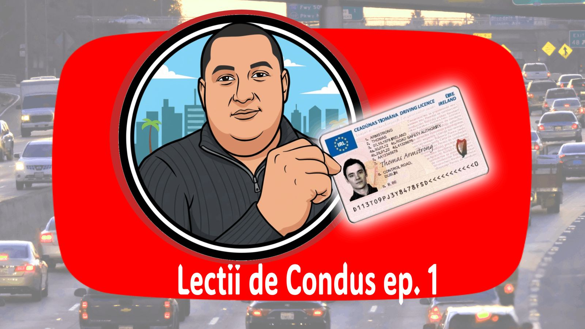
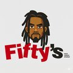

Explicații clare
Fiecare manevră este împărțită în pași simpli, ușor de reținut și aplicat.

București • Categoria B • Comunitate online activă
Florian Molea - Instructor Auto Categoria B
Lecții explicate calm, situații reale din trafic și conținut video care te ajută să înțelegi traseele de examen înainte să ajungi la volan.


Focus principal
YouTube este locul unde găsești videoclipuri lungi cu trasee de examen complete, situații reale din trafic și explicații calme, pas cu pas. Urmărește lecțiile ca să vezi cum se iau deciziile corecte în intersecții, schimbări de bandă, parcări și momentele care apar frecvent la examen.
Urmărește pe YouTubeDespre mine
Fiecare manevră este împărțită în pași simpli, ușor de reținut și aplicat.
Înveți într-un ritm sănătos, cu feedback direct și fără presiune inutilă.
Lucrezi pe situații concrete, intersecții aglomerate și trasee relevante pentru examen.
Ai acces la clipuri scurte, lecții lungi și exemple utile pe toate canalele sociale.
Testimoniale
Parteneriate
Platformă de pregătire pentru examenul auto și redobândirea permisului, care oferă chestionare oficiale, simulări de examen, legislație rutieră actualizată și explicații video pentru o învățare mai eficientă.
Verificare istoric autoServiciu european de verificare a istoricului mașinilor second-hand: kilometraj real, daune, leasing sau furt, direct din bazele de date oficiale europene, înainte de a cumpăra o mașină rulată.

Fast-foodRestaurant fast-food pe Bulevardul Nicolae Grigorescu 1A din București, deschis non-stop pentru gustări rapide la orice oră din zi sau din noapte.
Răspunsuri scurte pentru cei care vin de pe social media și vor să treacă rapid la programare sau la conținutul video.
Cel mai rapid este să trimiți un mesaj pe WhatsApp la numărul lui Florian și să stabiliți împreună disponibilitatea.
Lecțiile se desfășoară în București, pe trasee și zone utile pentru pregătirea examenului auto Categoria B.
Da. Butoanele de WhatsApp de pe pagină deschid conversația directă cu Florian.
Pe canalul de YouTube găsești videoclipuri lungi cu trasee de examen explicate cap-coadă.
Hub social
Alege canalul pe care înveți cel mai bine.